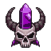
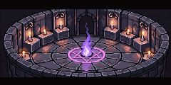
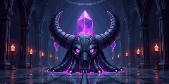

<title>소환 의식 화면 후보</title>
<link rel="stylesheet" href="https://fonts.googleapis.com/css2?family=Do+Hyeon&family=IBM+Plex+Sans+KR:wght@400;600&display=swap">
<style>
/* 레이아웃: 결정할 것마다 한 절. 휴대폰 모형(게임 실제 UI 그림·글꼴)과 설명을 나란히. 게임과 같은 밤 색 한 테마 */
:root {
  color-scheme: dark;
  --page: #120c18; --ink: #ece4f2; --muted: #a99bb5; --line: #2f2439;
  --panel: rgb(81, 20, 35); --bone: #efe3c8; --gold: #ffcf4d; --ruby: #ff4a5e;
  --rare: #5aa8ff; --epic: #c070ff; --legend: #ffcf4d;
  --game: 'Do Hyeon', 'Malgun Gothic', sans-serif;
  --body: 'IBM Plex Sans KR', system-ui, sans-serif;
}
body { background: var(--page); color: var(--ink); font: 15px/1.65 var(--body); }
main { max-width: 980px; margin: 0 auto; padding-block: 28px 64px; padding-inline: 16px; display: grid; gap: 40px; }
h1, h2 { font-family: var(--game); font-weight: 400; margin: 0; text-wrap: balance; letter-spacing: .01em; }
h1 { font-size: 32px; } h2 { font-size: 23px; }
p { margin: 0; max-width: 65ch; }
.lede, .note { color: var(--muted); }
.note { font-size: 13px; }
section { display: grid; gap: 14px; }
.opts { display: flex; flex-wrap: wrap; gap: 24px; align-items: flex-start; }
.opt { display: grid; gap: 8px; width: 300px; max-width: 100%; }
.opt h3 { margin: 0; font-family: var(--game); font-weight: 400; font-size: 19px; }
.opt h3 .rec { font-family: var(--body); font-size: 12px; color: #1c1206; background: var(--gold); padding: 2px 6px; border-radius: 4px; margin-left: 6px; vertical-align: 2px; }
.opt p { font-size: 14px; }

/* 휴대폰 모형: 실제 화면 375×812를 0.8배 */
.phone { width: 300px; height: 650px; max-width: 100%; position: relative; overflow: hidden; border: 2px solid var(--line); border-radius: 18px; background: #0c0716 url(bg_night.png) center top / cover; image-rendering: pixelated; font-family: var(--game); color: #f4ecdc; display: flex; flex-direction: column; }
.phone .tower { position: absolute; left: 50%; top: 40px; width: 230px; translate: -50% 0; image-rendering: pixelated; }
.phone .spacer { flex: 1; }
.hud { position: relative; display: flex; justify-content: space-between; padding: 8px; font-size: 13px; z-index: 2; }
.pill { border: 7px solid transparent; border-image: url(pill.png) 8 fill / 7px stretch; image-rendering: pixelated; padding: 0 4px; display: inline-flex; align-items: center; gap: 4px; }
.pill img { width: 18px; height: 18px; }
.btn { background: none; color: #f4ecdc; border: 9px solid transparent; border-image: url(bar.png) 10 fill / 9px stretch; image-rendering: pixelated; font: inherit; display: inline-flex; align-items: center; justify-content: center; gap: 4px; min-height: 36px; padding: 0 4px; }
.btn.big { border-width: 16px; border-image: url(button_big.png) 20 fill / 16px stretch; font-size: 19px; color: var(--bone); }
.btn img { width: 16px; height: 16px; image-rendering: pixelated; }
.btn small { font-size: 11px; color: var(--gold); display: block; }
.tabs { position: relative; z-index: 3; display: flex; gap: 2px; padding: 3px; background: #07030a; }
.tabs span { flex: 1; min-height: 32px; display: grid; place-items: center; font-size: 13px; color: #c9ae9a; border: 8px solid transparent; border-image: url(bar.png) 10 fill / 8px stretch; filter: brightness(.7); }
.tabs span.on { color: var(--gold); filter: brightness(1.3); }
.tabs span.new { color: #e7c8ff; filter: brightness(1.15) drop-shadow(0 0 4px #c070ffaa); }
.sheet { position: relative; z-index: 3; height: 222px; margin-top: 14px; border: 10px solid transparent; border-bottom-width: 5px; border-image: url(frame_sq.png) 10 / 10px 10px 5px stretch; background: var(--panel); background-clip: padding-box; display: flex; flex-direction: column; }
.sheet::before { content: ''; position: absolute; left: 50%; top: -28px; width: 120px; height: 36px; translate: -50% 0; background: url(crest.png) center / contain no-repeat; image-rendering: pixelated; }
.sheet-head { display: flex; justify-content: space-between; align-items: center; font-size: 16px; color: var(--bone); padding: 0 2px; }
.sheet-head img { width: 22px; height: 22px; }
.subtabs { display: flex; gap: 2px; }
.subtabs span { font-size: 12px; padding: 0 8px; color: #c9ae9a; border: 6px solid transparent; border-image: url(bar.png) 10 fill / 6px stretch; filter: brightness(.75); }
.subtabs span.on { color: var(--gold); filter: brightness(1.25); }
.altar { position: relative; flex: 1; margin: 4px 0; background: center / cover no-repeat; image-rendering: pixelated; border: 1px solid #00000080; display: flex; flex-direction: column; justify-content: space-between; padding: 4px; }
.altar .pity { align-self: center; font-size: 13px; color: var(--gold); text-shadow: 0 1px 0 #000, 0 0 4px #000; }
.altar .rates { align-self: flex-end; font-size: 11px; color: #e9dcff; text-shadow: 0 1px 0 #000; text-decoration: underline; }
.pulls { display: flex; gap: 6px; }
.pulls .btn { flex: 1; flex-direction: column; gap: 0; line-height: 1.1; font-size: 15px; }
.pulls .btn span { display: inline-flex; align-items: center; gap: 3px; font-size: 13px; color: var(--gold); }
.float-entry { position: absolute; left: 8px; top: 96px; z-index: 2; width: 52px; display: grid; justify-items: center; font-size: 11px; color: #e7c8ff; text-shadow: 0 1px 0 #000; }
.float-entry img { width: 46px; height: 46px; image-rendering: pixelated; filter: drop-shadow(0 0 5px #c070ffcc); }

/* 전체 화면 소환 */
.full { position: absolute; inset: 0; z-index: 5; background: #07030a; display: flex; flex-direction: column; }
.full .stage { flex: 1; background: center / cover no-repeat; image-rendering: pixelated; display: flex; flex-direction: column; justify-content: space-between; padding: 10px; }
.full .stage .top { display: flex; justify-content: space-between; align-items: center; }
.full .bottom { padding: 8px; display: grid; gap: 6px; background: var(--panel); border-top: 2px solid #000; }

/* 결과 카드 */
.results { position: absolute; inset: 0; z-index: 6; background: #07030aee; display: flex; flex-direction: column; align-items: center; justify-content: center; gap: 12px; padding: 10px; }
.results h4 { margin: 0; font-weight: 400; font-size: 20px; color: var(--bone); }
.cards { display: grid; grid-template-columns: repeat(4, 62px); gap: 6px; justify-content: center; }
.card { width: 62px; height: 78px; border: 6px solid transparent; border-image: url(frame_sq.png) 10 fill / 6px stretch; image-rendering: pixelated; display: grid; justify-items: center; align-content: center; gap: 1px; font-size: 10px; position: relative; }
.card img { width: 40px; height: 40px; image-rendering: pixelated; object-fit: contain; }
.card.rare { filter: drop-shadow(0 0 4px var(--rare)); }
.card.epic { filter: drop-shadow(0 0 6px var(--epic)); }
.card.legend { filter: drop-shadow(0 0 8px var(--legend)); }
.card b { font-weight: 400; color: var(--gold); }
.card .tag { position: absolute; top: -6px; right: -6px; font-size: 9px; background: var(--ruby); color: #fff; padding: 0 3px; border-radius: 3px; }
.legend-key { display: flex; flex-wrap: wrap; gap: 12px; font-size: 13px; color: var(--muted); }
.legend-key i { display: inline-block; width: 10px; height: 10px; border-radius: 50%; margin-right: 4px; vertical-align: -1px; }

/* 외형 탭 */
.coll { display: grid; grid-template-columns: repeat(7, 1fr); gap: 3px; padding-top: 4px; }
.cell { aspect-ratio: 1; border: 4px solid transparent; border-image: url(frame_sq.png) 10 fill / 4px stretch; image-rendering: pixelated; position: relative; }
.cell img { position: absolute; inset: 1px; width: calc(100% - 2px); height: calc(100% - 2px); object-fit: contain; image-rendering: pixelated; }
.cell.miss img { filter: brightness(0) opacity(.45); }
.cell.wear { filter: drop-shadow(0 0 3px var(--gold)); }
.cell.legend { filter: drop-shadow(0 0 4px var(--legend)); }

/* 그림 비교 */
.artrow { display: flex; flex-wrap: wrap; gap: 14px; }
.art { display: grid; gap: 6px; justify-items: center; }
.art .box { background: #221b29; border: 1px solid var(--line); border-radius: 6px; padding: 6px; }
.art .box img { display: block; image-rendering: pixelated; }
.art span { font-size: 13px; text-align: center; max-width: 200px; }
.art span small { display: block; color: var(--muted); font-size: 12px; }
.decide { border: 1px solid var(--gold); border-radius: 6px; padding: 14px 16px; display: grid; gap: 8px; }
.decide h2 { color: var(--gold); font-size: 19px; }
ul { margin: 0; padding-left: 20px; display: grid; gap: 4px; }
</style>
<main>
  <header style="display:grid;gap:8px">
    <h1>소환 의식 화면 후보</h1>
    <p class="lede">영혼석으로 하는 소환(1회 30, 10+1회 300)의 들어가는 곳, 화면, 결과, 전설 마왕 외형 후보입니다. 모형은 게임의 실제 창틀·버튼 그림과 글꼴로 만들었고, 숫자는 예시입니다. 서버 쪽 소환은 완성되어 로컬 서버 모드에서 확인했습니다.</p>
  </header>

  <section>
    <h2>1. 들어가는 곳</h2>
    <div class="opts">
      <div class="opt">
        <h3>A. 아래 탭에 "소환" <span class="rec">추천</span></h3>
        <div class="phone">
          
          <div class="hud"><span class="pill">300</span><span class="pill">2.1k</span></div>
          <div class="spacer"></div>
          <div class="tabs"><span>강화</span><span>기록</span><span class="new">소환</span><span>리그</span><span>상점</span></div>
        </div>
        <p>다른 창과 같은 자리라 한눈에 보이고 클릭 한 번으로 열립니다. 탭이 5개가 되어 글자가 조금 작아집니다(375px에서 탭 하나 약 70px).</p>
      </div>
      <div class="opt">
        <h3>B. 탑 왼쪽에 제단 아이콘</h3>
        <div class="phone">
          
          <div class="hud"><span class="pill">300</span><span class="pill">2.1k</span></div>
          <div class="float-entry">소환</div>
          <div class="spacer"></div>
          <div class="tabs"><span>강화</span><span>기록</span><span>리그</span><span>상점</span></div>
        </div>
        <p>탭은 그대로 4개. 보라빛으로 빛나는 아이콘이 눈에 띄지만 홈 화면에 요소가 하나 늘어납니다.</p>
      </div>
    </div>
  </section>

  <section>
    <h2>2. 소환 창</h2>
    <div class="opts">
      <div class="opt">
        <h3>A. 아래 1/3 창 <span class="rec">추천</span></h3>
        <div class="phone">
          
          <div class="spacer"></div>
          <div class="sheet">
            <div class="sheet-head"><div class="subtabs"><span class="on">소환</span><span>외형 3/13</span></div></div>
            <div class="altar" style="background-image:url(altar_b.png)">
              <span class="pity">전설까지 63회</span>
              <span class="rates">확률 보기</span>
            </div>
            <div class="pulls">
              <span class="btn">1회<span>30</span></span>
              <span class="btn">10+1회<span>300</span></span>
            </div>
          </div>
          <div class="tabs"><span>강화</span><span>기록</span><span class="on">소환</span><span>리그</span><span>상점</span></div>
        </div>
        <p>다른 창과 같아서 탑과 마왕이 계속 보입니다. 제단 그림 위에 "전설까지 n회", 아래에 두 버튼. 외형 탭에서 모은 외형을 보고 입힙니다.</p>
      </div>
      <div class="opt">
        <h3>B. 전체 화면 제단</h3>
        <div class="phone">
          <div class="full">
            <div class="stage" style="background-image:url(altar_b.png)">
              <div class="top"><span class="pill">2.1k</span></div>
              <div style="display:grid;justify-items:center;gap:2px;text-shadow:0 1px 0 #000"><span style="color:var(--gold);font-size:18px">전설까지 63회</span><span style="font-size:12px;text-decoration:underline">확률 보기</span></div>
            </div>
            <div class="bottom">
              <div class="pulls"><span class="btn">1회<span>30</span></span><span class="btn">10+1회<span>300</span></span></div>
              <div class="coll">
                <div class="cell wear"></div><div class="cell miss"></div><div class="cell"></div><div class="cell miss"></div><div class="cell miss"></div><div class="cell"></div><div class="cell miss legend"></div>
              </div>
            </div>
          </div>
        </div>
        <p>제단이 크게 보여 의식 느낌이 강합니다. 대신 탑이 가려지고 "화면 정보는 적게" 원칙에서 조금 멀어집니다.</p>
      </div>
    </div>
  </section>

  <section>
    <h2>3. 제단 그림</h2>
    <div class="artrow">
      <div class="art"><div class="box"></div><span>A. 원형 소환실<small>바닥 보라 오망성 · 가운데 영혼불 · 둘레 촛불</small></span></div>
      <div class="art"><div class="box"></div><span>B. 뿔 해골 제단 <b style="color:var(--gold);font-weight:400">추천</b><small>떠 있는 영혼석 수정 · 영혼석과 같은 보라라 재화가 이어져 보임</small></span></div>
    </div>
  </section>

  <section>
    <h2>4. 결과</h2>
    <div class="opts">
      <div class="opt">
        <h3>10+1 결과</h3>
        <div class="phone">
          
          <div class="results">
            <h4>소환 결과</h4>
            <div class="cards">
              <div class="card"><b>+15</b></div>
              <div class="card rare"><b>+50</b></div>
              <div class="card"><b>+15</b></div>
              <div class="card"><b>+15</b></div>
              <div class="card epic"><span class="tag">NEW</span><b>왕실 용</b></div>
              <div class="card"><b>+15</b></div>
              <div class="card rare"><b>+50</b></div>
              <div class="card"><b>+15</b></div>
              <div class="card"><b>+15</b></div>
              <div class="card epic"><b>+150</b></div>
              <div class="card legend"><span class="tag">NEW</span><b>전설!</b></div>
            </div>
            <span class="btn big" style="min-width:150px">확인</span>
          </div>
        </div>
      </div>
      <div class="opt" style="width:min(100%,420px)">
        <h3>보여 주는 방법</h3>
        <ul>
          <li>제단 수정이 번쩍인 뒤 카드가 한 장씩 뒤집힙니다(한 장 0.15초). 누르면 바로 모두 뒤집힙니다.</li>
          <li>카드 테두리 빛으로 등급을 보여 줍니다. 창틀 그림에 빛만 더하고 색 상자는 쓰지 않습니다.</li>
          <li>처음 얻은 외형은 NEW, 이미 가진 외형은 그 자리에 바꿔 준 영혼석(+150, +1,500)이 뜹니다.</li>
          <li>영웅·전설이 있으면 그 카드에서 소리와 흔들림이 한 번 더 납니다(효과음은 Mixkit 후보를 따로 보여 드립니다).</li>
          <li>받은 영혼석은 확인을 누를 때 윗줄 숫자가 올라가며 세어집니다(지금 재화 표시 방식 그대로).</li>
        </ul>
        <div class="legend-key"><span><i style="background:#8b7d70"></i>일반 70%</span><span><i style="background:var(--rare)"></i>희귀 24%</span><span><i style="background:var(--epic)"></i>영웅 5.5%</span><span><i style="background:var(--legend)"></i>전설 0.5%</span></div>
        <p class="note">"확률 보기"는 등급별 확률, 10+1 영웅 이상 확정, 천장 100회, 중복 시 영혼석을 한 표로 보여 줍니다. 상점의 영혼석 묶음 옆에도 같은 표로 가는 글자를 둡니다.</p>
      </div>
    </div>
  </section>

  <section>
    <h2>5. 전설 마왕 외형 (소환 한정)</h2>
    <p class="note">96px, 4장 중 하나를 고르면 대기·공격·쓰러짐 움직임을 만듭니다. 아래 줄은 지금 게임에 있는 마왕 외형입니다.</p>
    <div class="artrow">
      <div class="art"><div class="box"></div><span>1. 심연 황제<small>금빛 룬 흑요석 갑옷 · 검은 불꽃 왕관 · 보라 망토. 사람형에 가까움</small></span></div>
      <div class="art"><div class="box"></div><span>2. 뼈 용 리치 왕<small>날개 달린 해골 용 · 갈비뼈 안 초록 영혼불 · 금 가시 왕관</small></span></div>
      <div class="art"><div class="box"></div><span>3. 타락 대악마<small>푸른 불꽃 날개 넷 · 검은 가시 후광 · 빛나는 검. 사람형에 가까움</small></span></div>
      <div class="art"><div class="box"></div><span>4. 외눈 심연 군주<small>촉수 괴물 · 거대한 눈 하나 · 금 왕관과 보석 사슬</small></span></div>
    </div>
    <div class="artrow">
      <div class="art"><div class="box"></div><span>기본</span></div>
      <div class="art"><div class="box"></div><span>해골 군주(패스)</span></div>
      <div class="art"><div class="box"></div><span>흑룡(패스 10단계)</span></div>
      <div class="art"><div class="box"></div><span>용암 마왕(VIP 5)</span></div>
      <div class="art"><div class="box"></div><span>보라 날개 악마(VIP 8)</span></div>
    </div>
  </section>

  <section class="decide">
    <h2>정해 주실 것</h2>
    <ul>
      <li>들어가는 곳: A 아래 탭(추천) / B 제단 아이콘</li>
      <li>소환 창: A 아래 1/3 창(추천) / B 전체 화면</li>
      <li>제단 그림: A / B(추천)</li>
      <li>결과 화면: 이대로 / 고칠 점</li>
      <li>전설 마왕 외형: 1~4 중 하나 (2·4가 괴물형)</li>
    </ul>
  </section>
</main>
